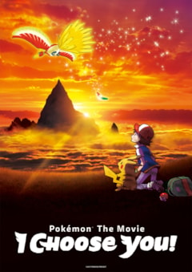

Anime
A jornada animada começou em 1997 no Japão e apresentou treinadores, regiões e Pokémon a milhões de pessoas. Cada série acompanha novas aventuras, batalhas e descobertas.
Toque na imagem para visitar a página oficial de animação Pokémon.